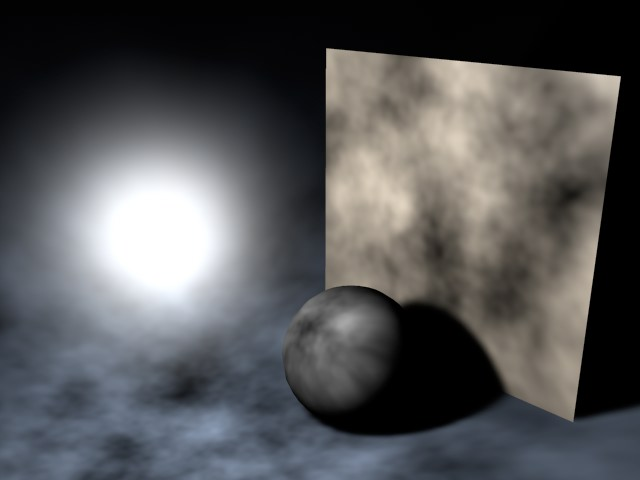
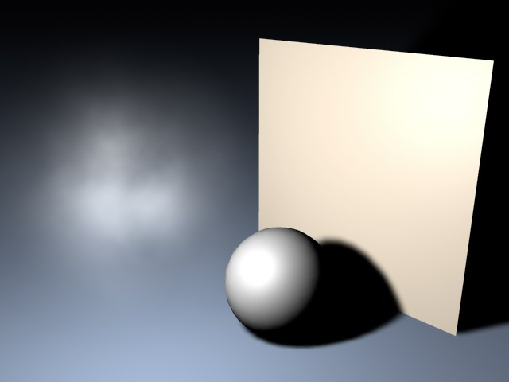
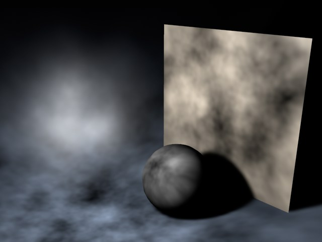
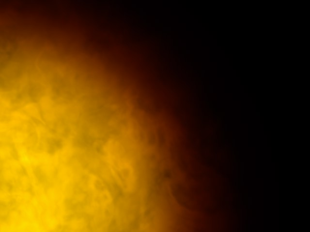
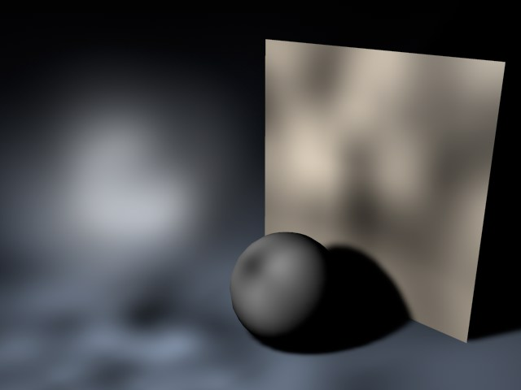
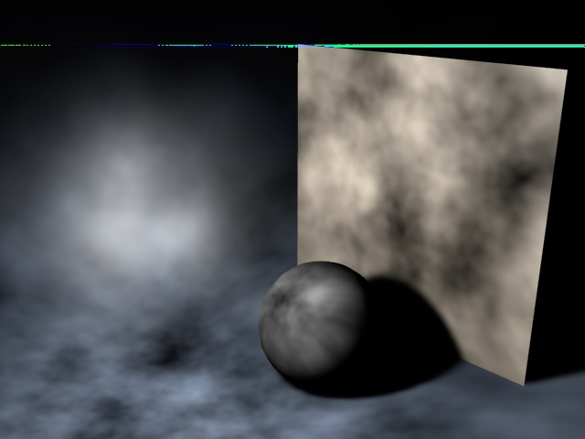
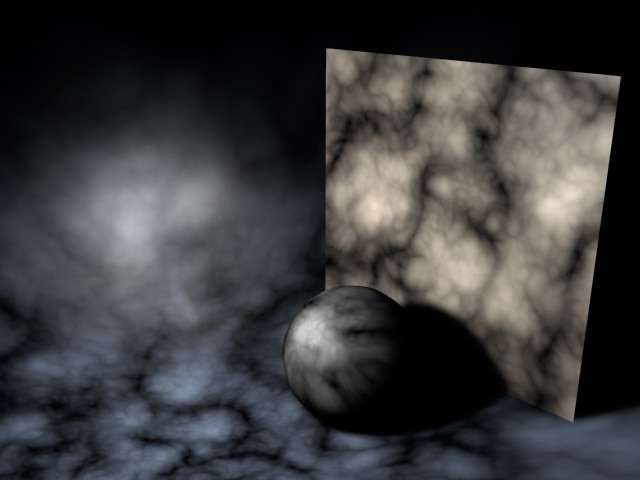
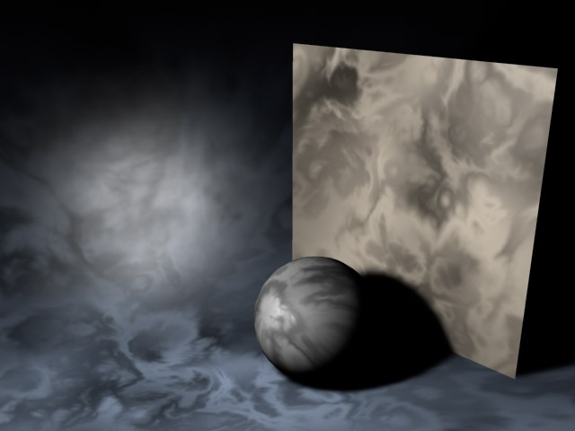

Function available in CINEMA 4D Prime, Visualize, Broadcast, Studio & BodyPaint 3D
噪波
使用这个特性可以实现诸如运动的烟雾或闪耀的太阳这样的效果，而不需要使用消耗大量时间的体积着色器。但是，带有噪波效果的灯光仍然需要多花费一点渲染时间，带有噪波的灯光的计算速度比没有噪波的要更慢。

你可以为光源添加不规则效果来赋予它真实的外观。一个灯光的光照表面基本不会是均匀照明的——尤其是有灰尘或污渍的时候。

这个选项会将不规则效果添加到可见灯光本身上，而不是灯光表面。例如，可以用来模拟在光锥中可见的翻滚烟雾。


确保基本灯光和可见灯光都开启了不规则噪波。

从四种类型中选择，包括三种湍流，它们可以产生类似云的效果。
噪波会产生暗的区域和亮的区域。
| 噪波

|
柔性湍流
 |
| 刚性湍流
 |
波状湍流
 |
只跟上面的湍流类型有关。阶度数值决定了噪波的颗粒程度，数值越高，颗粒越多。
设置不规则变化的速度。
使用这个参数可以提高不规则效果的整体亮度，也可以输入负数来减少亮度。
提高数值会增加噪波的对比，反之降低对比。
启用这个选项可以光源的局部坐标是固定的。如果光源进行移动，湍流/噪波也会移动。正常情况下可以不启用这个选项，因为真实世界中的灰尘和颗粒不会跟随灯光移动。
光照噪波是一直固定到灯光的坐标的。不启用这个选项，则可见噪波使用的是全局坐标。
这些数值决定了不规则效果在 X、Y、Z 三个方向上的尺寸，这是基于场景的绝对笛卡尔坐标的。如果噪波效果太强烈，可以降低这些数值。
使用这项设置可以定义被照亮对象上的噪波尺寸。较低的数值会产生粗糙的噪波，较高的数值则会产生平滑的噪波。
你可以在这里定义噪波的风力属性。这会提高动画的真实性，因为会有风吹动尘埃。
这三个风力的数值定义了在绝对笛卡尔坐标系中的风向（如果启用了“局部”选项，则是局部坐标）。使用比率数值可以改变风力强度。